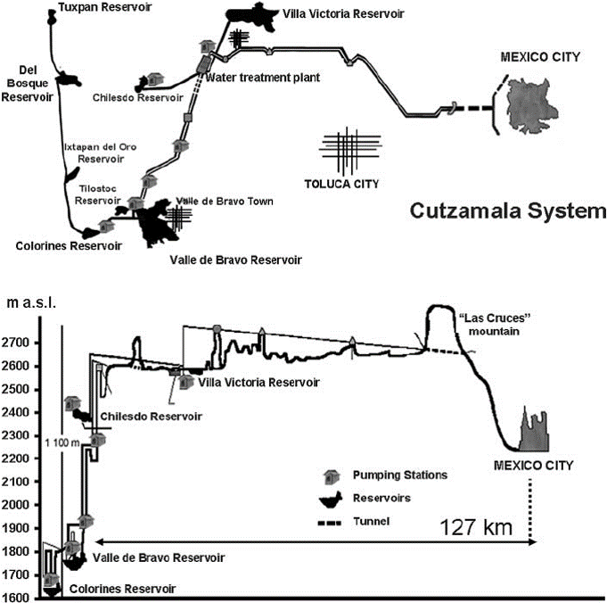

1. Background
Water infrastructure encompasses the systems and structures designed to manage water resources, ensuring supply, treatment, storage, and distribution for various needs. It also includes mechanisms for flood control, hydropower generation, and water-based transportation, such as canals.
These systems range from ancient structures like aqueducts and cisterns, which were used to transport and store water, to modern facilities like desalination plants, wastewater treatment facilities, and hydroelectric power stations. Key components also include flood prevention measures (e.g., levees, floodgates) and stormwater management solutions (e.g., rain gardens, retention ponds).
Water infrastructure plays a vital role in sustaining communities, supporting agriculture, industry, and energy production, while also protecting against natural hazards like floods and droughts. Its efficient management is crucial for resilience in the face of climate change and growing water demand.

2. Examples
Cutzamala Water System – Mexico City
- Water supply system providing 30% of Mexico City’s water
- Composed of a complex interbasin transfer system
- Challenge: Rapid population growth and urban expansion creating higher water demand
- Climate sensitivity: Projections indicate reduced reliability by 2050

3. Open Source Data (Global)
- Global Power Plant Database
- River networks / Lakes / Wetlands
- Roads and railroads
- Dams and reservoirs
- Climate stations
References
-
Bertule, M., Lloyd, G. J., Korsgaard, L., Dalton, J., Welling, R., Barchiesi, S., … & Cole, R. (2014). Green Infrastructure Guide for Water Management: Ecosystem-based management approaches for water-related infrastructure projects. United Nations Environment Programme.
-
Fabunmi, O. B., & Anyaeji, C. (2020). Classification of infrastructure and its for infrastructure delivery. Public Private Partnerships in Nigeria.
-
Michigan Association of Planning (M.A.P). (2020). Blue Green Infrastructure. Michigan.
-
Ramírez-Zierold, J. A., Merino-Ibarra, M., Monroy-Ríos, E., Olson, M., Castillo, F. S., Gallegos, M. E., & Vilaclara, G. (2010). Changing water, phosphorus and nitrogen budgets for Valle de Bravo reservoir, water supply for Mexico City Metropolitan Area. Lake and Reservoir Management, 26(1), 23-34.
-
Stip, C., Mao, Z., Bonzanigo, L., Browder, G., & Tracy, J. (2019). Water Infrastructure Resilience – Examples of Dams, Wastewater Treatment Plants, and Water Supply and Sanitation Systems. Sector note for LIFELINES: The Resilient Infrastructure Opportunity, World Bank, Washington, D.C.